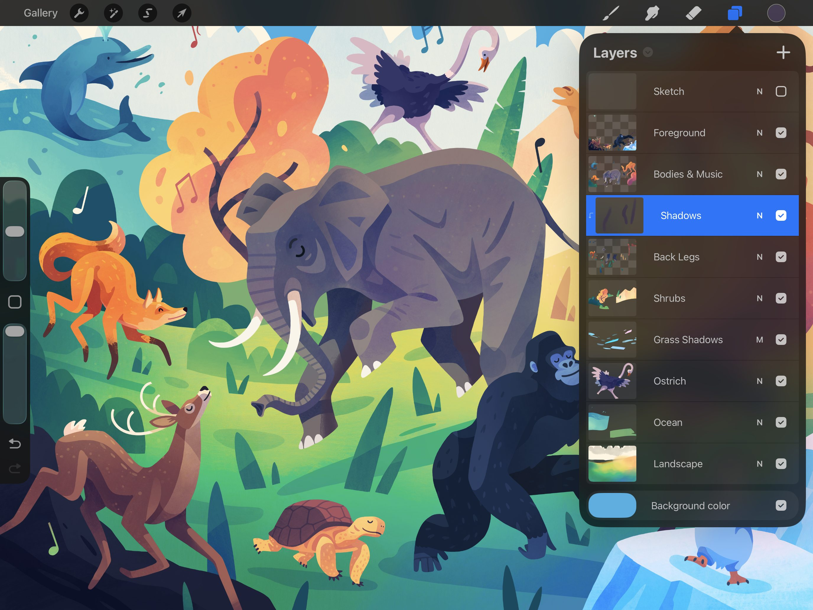
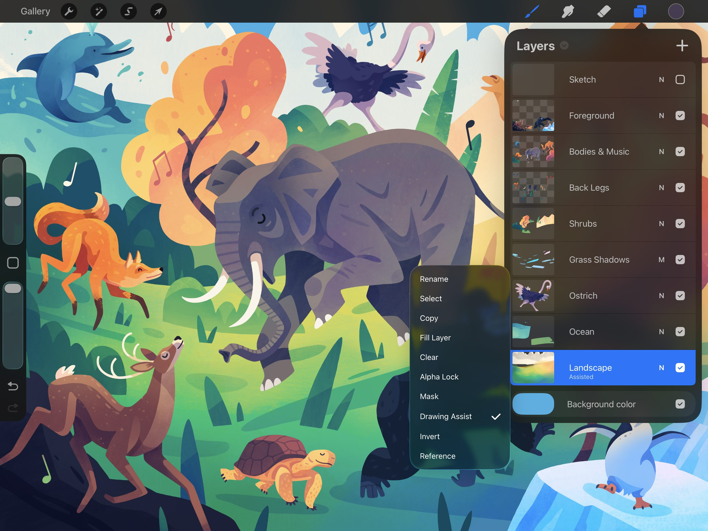
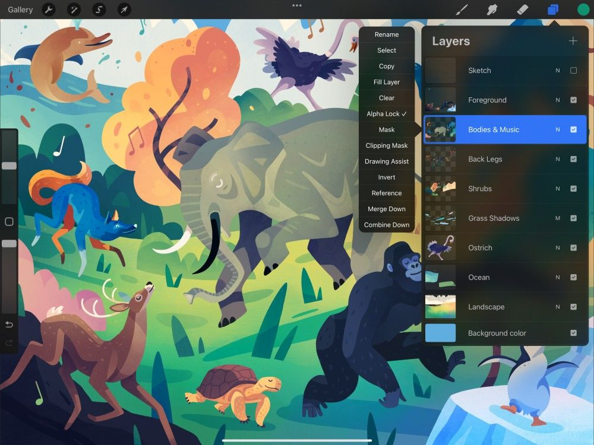
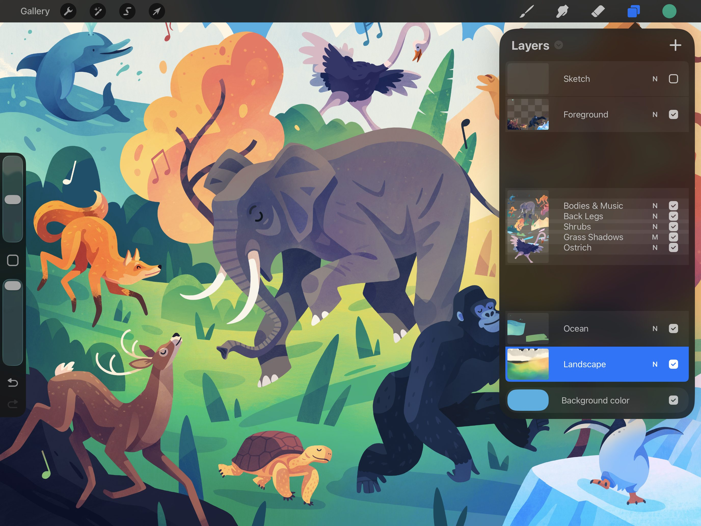
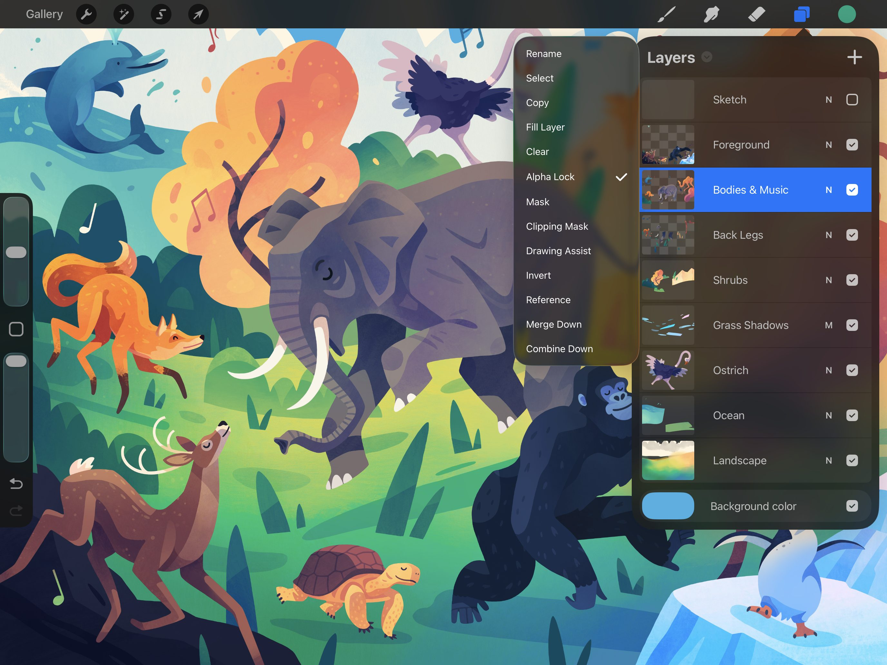

📖 Đã dịch sang tiếng Việt. Thuật ngữ chuyên môn giữ tiếng Anh — rê chuột để xem nghĩa (tooltip).
Options
Rename (đổi tên), Select (chọn), Copy (sao chép), Fill (tô đầy) và Clear (xóa sạch). Làm chủ các chức năng mạnh mẽ như Alpha, Mask, Reference và Merge thông qua Layer Options menu.
Layer Options Menu (Menu Tùy chọn lớp)
Layer Options menu mang đến nhiều cách để tương tác với các lớp chỉ bằng một cú chạm.


Mở Layers, chạm vào một lớp một lần để chọn nó, rồi chạm thêm một lần nữa để truy cập Layer Options menu.
Rename
Đặt cho lớp của bạn một tên tùy chỉnh.
Các lớp được thêm vào dự án sẽ có tên đánh số theo thứ tự theo mặc định, ví dụ Layer 1, Layer 2, Layer 3… Để dễ nhớ nội dung của từng lớp, bạn có thể đổi tên chúng.
Trong bảng Layers, chạm vào một lớp để mở Layer Options, sau đó chạm Rename. Sau khi đổi tên xong, nhấn Return hoặc chạm vào bất kỳ đâu trên khung vẽ để ẩn bàn phím.
Select
Chọn nội dung của một layer.

Trong bảng Layers, chạm vào một lớp để mở Layer Options, sau đó chạm Select.
Thao tác này sẽ chọn nội dung trên lớp ở những nơi bạn đã vẽ, tô màu hoặc dán ảnh.
Lượng được chọn dựa trên kênh alpha, hay mức độ đục, của nội dung lớp. Độ đục càng cao thì phần được chọn càng nhiều. Tính năng này phù hợp nhất để thêm chi tiết vào nội dung đã chọn trên nhiều lớp, chẳng hạn như tạo bóng, họa tiết và màu sắc.
Khi một vùng chọn đang hoạt động, bạn sẽ thấy các vùng nằm ngoài vùng chọn được đánh dấu bằng các đường chéo di chuyển.
Từ đây, bạn có thể thực hiện mọi kiểu thao tác trên vùng đã chọn. Bạn có thể vẽ, làm mịn viền (feather), xóa sạch (clear) và hơn thế nữa.
Phần Selections trong Sổ tay sẽ tìm hiểu sâu hơn về các công cụ vùng chọn.
Copy
Sao chép lớp đang hoạt động vào clipboard.
Trong bảng Layers, chạm vào một lớp để mở Layer Options, sau đó chạm Copy.
Sau khi sao chép dữ liệu ảnh vào clipboard, bạn có thể dán nó vào một lớp khác hoặc một khung vẽ Procreate khác. Bạn cũng có thể dán vào một email, hoặc vào một ứng dụng khác.
Fill Layer (Tô đầy lớp)
Tô đầy một lớp bằng một màu đồng nhất.
Trong bảng Layers, chạm vào một lớp để mở Layer Options, sau đó chạm Fill Layer.
Thao tác này sẽ tô đầy toàn bộ lớp bằng màu đang được chọn. Màu đồng nhất sẽ ghi đè lên mọi nội dung khác của lớp.
Clear
Xóa sạch toàn bộ một lớp trong chớp mắt.
Trong bảng Layers, chạm vào một lớp để mở Layer Options, sau đó chạm Clear.
Thao tác này sẽ xóa sạch nội dung của toàn bộ lớp. Nó sẽ không thay đổi tên lớp hay đặt lại chế độ hòa trộn hay độ đục.
Thiết lập
Để kiểm soát Clear Layer tinh tế hơn, hãy vào Actions > Prefs > Gesture Controls > Clear Layer.
Tại đây bạn có thể thiết lập các phím tắt và cài đặt cho chạm và Pencil để đưa Clear Layer vào quy trình làm việc của mình.
Alpha Lock (Khóa alpha)
Khóa độ trong suốt của một lớp, sao cho bạn chỉ có thể vẽ trên những vùng đã có sẵn nội dung.
Mọi nét vẽ hay tô màu tiếp theo sẽ chỉ ảnh hưởng đến tác phẩm sẵn có trên lớp đó. Các vùng trong suốt sẽ không bị ảnh hưởng.
Alpha Lock rất lý tưởng để thêm họa tiết, chi tiết hoặc đổ bóng cho một thành tố của tác phẩm mà không bị vẽ ra ngoài đường nét.
Trong ví dụ dưới đây, ở bên trái một nét đổ bóng được áp dụng lên phần trên của lớp voi khi Alpha Lock đang tắt. Ở bên phải, một nét đổ bóng được áp dụng lên phần trên của lớp voi khi Alpha Lock đã bật.

Trong bảng Layers, chạm vào một lớp để mở Layer Options, sau đó chạm Alpha Lock.
Nền carô trong ảnh thu nhỏ của lớp cho biết Alpha Lock đang được bật.
Tìm hiểu thêm về Alpha Lock trong Masks.
Mask
Hiện và ẩn từng phần của một lớp bằng Layer Mask (mặt nạ lớp).
Trong Layers, chạm vào lớp đang hoạt động để mở Layer Options, sau đó chạm Mask. Thao tác này sẽ tạo một Layer Mask và gắn nó ngay bên dưới lớp đang hoạt động của bạn.

Các giá trị thang độ xám của Layer Mask sẽ ẩn và hiện nội dung của lớp bên dưới. Dùng các giá trị sáng hơn để hiện nhiều hơn phần của lớp, và giá trị tối hơn để ẩn nhiều hơn.
Dùng các giá trị xám khác nhau để thay đổi độ đục của nội dung bên dưới theo cách không phá hủy (non-destructive).
If you don't like the result, swipe left on the Layer Mask, and tap Delete.
Tìm hiểu thêm về Masks.
Clipping Mask (Mặt nạ cắt)
Chỉnh sửa một lớp bằng nội dung của một lớp khác.

Clipping Mask hoạt động giống như một lớp đã bật Alpha Lock, nhưng không bị gắn cố định vào một lớp cụ thể duy nhất. Clipping Mask đóng vai trò như một lớp riêng biệt và độc lập. Bạn có thể liên kết Clipping Mask với bất kỳ lớp nào khác. Nhờ vậy, bạn có thể di chuyển Clipping Mask từ lớp này sang lớp khác, hoặc xếp chồng nhiều Clipping Mask lên trên một lớp nền duy nhất. Điều này cho phép tạo ra các hiệu ứng thị giác phức tạp.
Clipping Mask là một cách tuyệt vời để chỉnh sửa nội dung theo cách không phá hủy. Nó cho phép bạn thử nghiệm với màu sắc, họa tiết và hiệu ứng mà không phải lo lắng về việc thay đổi trở thành vĩnh viễn.
Trong bảng Layers, chạm vào một lớp để mở Layer Options, sau đó chạm Clipping Mask.
If you don't like the result, remove it. Swipe right-to-left on the Clipping Mask, and tap Delete.
Tìm hiểu thêm về Masks.
Drawing Assist (Hỗ trợ vẽ)
Tự động hóa các nét cọ của bạn.

Drawing Assist hoạt động kết hợp cùng Drawing Guides, bổ sung một số kiểu tự động hóa cho các nét cọ của bạn.
Nó có thể ‘bám’ nét vẽ của bạn theo một đường dẫn hoặc lưới phối cảnh. Dùng các cài đặt Symmetry, nó có thể phản chiếu các nét vẽ trên khung vẽ theo nhiều cách khác nhau. Nhờ đó bạn có thể vẽ các hình ảnh đối xứng hoặc kiểu kaleidoscope.
Trong bảng Layers, chạm vào một lớp để mở Layer Options, sau đó chạm Drawing Assist.
Lặp lại các bước trên để tắt Drawing Assist.
Tìm hiểu thêm về Drawing Guides.
Invert
Đảo ngược màu sắc trong lớp của bạn.

Thao tác này thay thế mỗi màu bằng màu bổ tương ứng đối lập với nó.
Trong bảng Layers, chạm vào một lớp để mở Layer Options, sau đó chạm Invert.
Lặp lại các bước trên để đảo ngược các màu trở lại sắc thái gốc.
Reference (Tham chiếu)
Tạo các vùng tô màu mà vẫn tôn trọng các nét mực trên một lớp riêng.

Tính năng nâng cao này giúp các họa sĩ truyện tranh và họa sĩ thiết kế khái niệm giữ riêng biệt phần tô màu và nét mực.
Với cài đặt này, bạn có thể ColorDrop các mảng tô lên bất kỳ Layer nào. Các mảng tô sẽ hoạt động như thể chúng đang chảy vào nét vẽ trên Reference Layer.
Việc giữ nét vẽ và màu sắc trên các lớp riêng biệt cho phép bạn tô màu lại và điều chỉnh cả hai thành tố một cách độc lập.
Trong bảng Layers, chạm vào một lớp để mở Layer Options, sau đó chạm Reference.
Reference Layer hiển thị nhãn Reference ngay bên dưới tên lớp.
Chọn một lớp đang hoạt động khác và ColorDrop sẽ tô vào lớp đó dựa trên Reference Layer.
Tìm hiểu thêm về ColorDrop.
Merge Down (Gộp xuống)
Kết hợp hai lớp thành một.


Merge Down kết hợp lớp đang hoạt động với lớp ngay bên dưới nó. Hai lớp trở thành một lớp duy nhất, và không còn chỉnh sửa được như các đối tượng riêng biệt.
Trong bảng Layers, chạm vào một lớp để mở Layer Options, sau đó chạm Merge Down.
Việc gộp các lớp sẽ áp dụng mọi chế độ hòa trộn xuống các pixel bên dưới. Nó cũng sẽ bỏ qua bất kỳ alpha lock nào mà bạn đã thiết lập.
Nếu bạn chạm giới hạn số lớp, hãy xem qua các lớp để tìm những lớp có thể gộp lại. Tốt nhất là chỉ nên gộp khi bạn đã hài lòng với phần đã vẽ và biết rằng mình sẽ không thay đổi lớp đó nữa.
Khi gộp nhiều lớp, lớp đơn được tạo ra sẽ mang tên của lớp nằm ở dưới cùng trong số các lớp đã gộp.
Combine Down (Kết hợp xuống)
Nhóm các lớp lại với nhau.

Combine Down gộp lớp đang hoạt động cùng lớp ngay bên dưới nó vào một vùng chứa gọi là Layer Group.
Trong bảng Layers, chạm vào một lớp để mở Layer Options, sau đó chạm Combine Down.
Nếu bạn dùng Combine Down trên một lớp nằm ngay phía trên một Layer Group, lớp của bạn sẽ trở thành một phần của Group sẵn có.
Bạn cũng có thể kết hợp một Group với một lớp bên dưới, hoặc kết hợp hai Group với nhau.
Tìm hiểu thêm về Layer Groups.
Still have questions?
If you didn't find what you're looking for, explore our video resources on YouTube or contact us directly. We’re always happy to help.